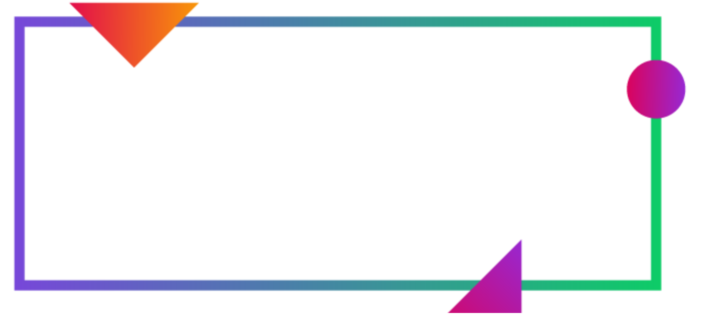
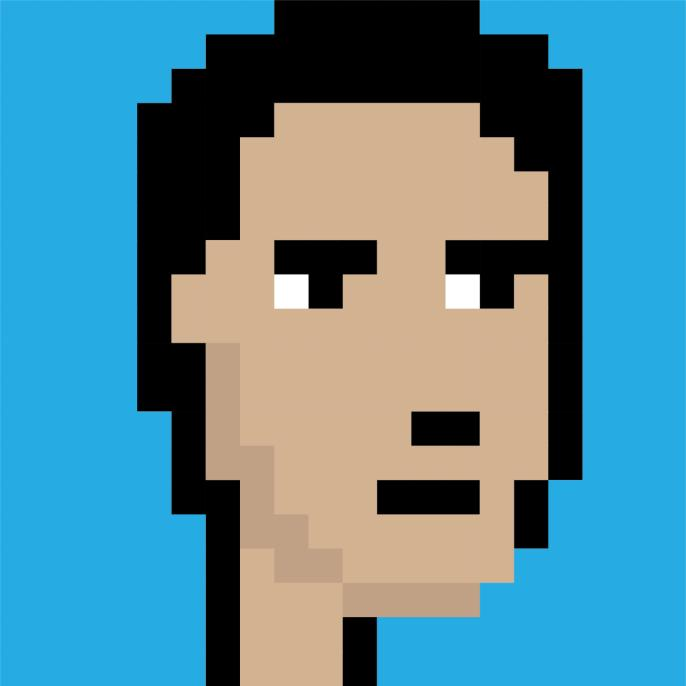

Thesis
We believe in the inherent capabilities of unique and equitable Web3 incentive structures to disrupt legacy systems of governance and reward mechanisms. The emergence of high-throughput blockchain infrastructure paired with the advent of token-incentivized DePINs present opportunities to revolutionize the status quo in the creation for a more fair, clean and transparent future.
CarpCap Ecosystem
| Category |
Think |
| Decentralized Physical Infrastructure Networks (DePIN) |
Helium, DIMO, Hivemapper, WeatherXM |
| Decentralized Virtual Infrastructure Networks (DeVIN) |
Urbit, Holium, AirTOR |
| High-Performance Blockchains |
Solana, Eclipse, Sui, Aptos |
| Next-Gen Proof of Work (PoW) |
Tari, Ironfish |
| Sovereign Computing |
Urbit, Holium, AirTOR |
research
Mycelium Testbed: A Comprehensive Platform for DePIN
shdwDrive Investment Memo
Eclipse Investment Memo
Tari Investment Memo
Helium Mobile Investment Memo
Ecosystem


team

Nick Carpinito (Meta Light)
Head of Ecosystem - Mycelium Networks